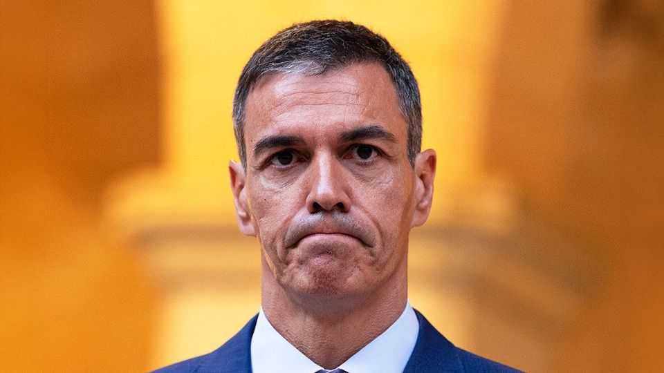
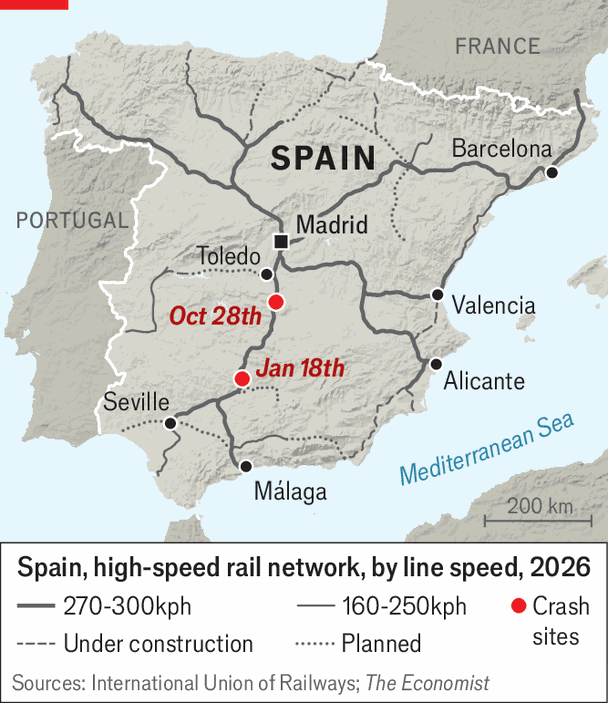
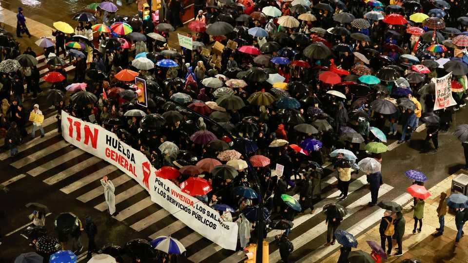

Spain’s rail crashes are a grim backdrop to the election
Once a source of national pride, high-speed rail now causes anguish

Nov 12th 2026
WHEN SPAIN’S first high-speed train from Madrid to Seville was inaugurated in 1992, it was much more than just a railway line. It was a symbol of the country’s emergence as a modern democracy. In the years since, high-speed lines have covered much of the country, becoming a source of national pride.
Yet now, ahead of a general election on November 29th, the rail network has become a source of anguish. Two crashes on the same line to Seville, first in January and then in October, killed a total of 115 people (see map). “Psychologically, for a lot of people it’s a symbol of what’s gone wrong in Spain” in recent years, says Luis Garicano, a Spanish economist at the London School of Economics. That includes relentless political polarisation under Pedro Sánchez (pictured), the Socialist prime minister, the taint of corruption surrounding his party and an ever-worsening housing crisis.

The timing of the second accident could not have been worse for Mr Sánchez, whose Socialist Party is trailing in the polls behind the centre-right People’s Party. It and the populist-right Vox party are projected to win about 200 seats between them in the 350-seat parliament, against around 105 for the Socialists. In what looked like an effort to help Mr Sánchez, the main labour unions led a general strike on November 11th, the first since 2012, to protest about evictions, rising rents and the high cost of living.
The centre-right opposition wants to build more houses, control immigration and cut taxes. But it also accuses Mr Sánchez of incompetence, not least in his running of the railways, whose recent crash exposed a string of failures. These start with the computerised train-control system, which dates from 1992. It failed during the October crash, for the 170th time this year. A new system is due to start on the Seville line in 2027, a year later than planned. European Union prosecutors are investigating the possible misuse of European funds that paid for this and other improvements. One problem is that successive governments prioritised expanding the system rather than maintenance spending, which is only around half the European average per kilometre.

The government’s critics point to political interference in Adif, the state outfit that runs the railways. It has had seven presidents since 2012. José Luis Ábalos, who was Mr Sánchez’s transport minister from 2018 to 2021 while also running the Socialist Party, is serving a jail sentence for corruption. The Adif director in charge of rail safety was a former Socialist spin doctor.
On November 10th King Felipe and some political leaders attended a sombre state funeral for the victims in Toledo cathedral. The rail disaster will continue to cast a long shadow over the vote. ■